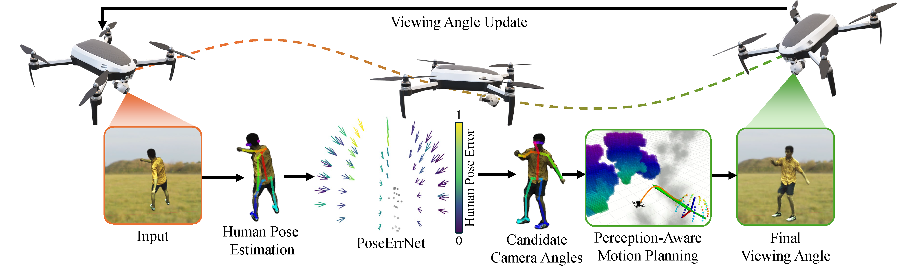
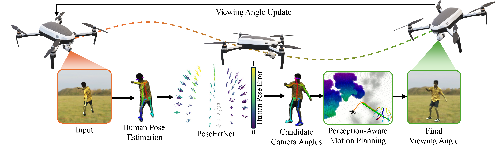

Our proposed pipeline consists of two main components: On-Drone Perception and Perception Aware Planning.
Our proposed pipeline consists of two main components: On-Drone Perception and Perception Aware Planning.
One of the core activities of an active observer involves moving to secure a "better" view of the scene, where the definition of "better" is task-dependent. This paper focuses on the task of human pose estimation from videos capturing a person's activity. Self-occlusions within the scene can complicate or even prevent accurate human pose estimation. To address this, relocating the camera to a new vantage point is necessary to clarify the view, thereby improving 2D human pose estimation. This paper formalizes the process of achieving an improved viewpoint. Our proposed solution to this challenge comprises three main components: a NeRF-based Drone-View Data Generation Framework, an On-Drone Network for Camera View Error Estimation, and a Combined Planner for devising a feasible motion plan to reposition the camera based on the predicted errors for camera views. The Data Generation Framework utilizes NeRF-based methods to generate a comprehensive dataset of human poses and activities, enhancing the drone's adaptability in various scenarios. The Camera View Error Estimation Network is designed to evaluate the current human pose and identify the most promising next viewing angles for the drone, ensuring a reliable and precise pose estimation from those angles. Finally, the combined planner incorporates these angles while considering the drone's physical and environmental limitations, employing efficient algorithms to navigate safe and effective flight paths. This system represents a significant advancement in active 2D human pose estimation for an autonomous UAV agent, offering substantial potential for applications in aerial cinematography by improving the performance of autonomous human pose estimation and maintaining the operational safety and efficiency of UAVs.
@article{chen2024active,
title={Active Human Pose Estimation via an Autonomous UAV Agent},
author={Chen, Jingxi and He, Botao and Singh, Chahat Deep and Fermuller, Cornelia and Aloimonos, Yiannis},
journal={arXiv preprint arXiv:2407.01811},
year={2024}
}